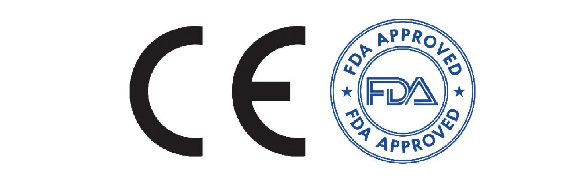

Cardiac Pacemakers
Comprehensive overview of modern cardiac pacemaker technologies
üìà Evolution & Types of Cardiac Pacemakers
The evolution of the cardiac pacemaker spans over two centuries, beginning with early explorations into electricity and its effects on the human body. In 1774, Charles Kite documented using electricity to revive a child, and during the 1800s, scientists like Luigi Galvani and Alessandro Volta studied bioelectricity, setting the foundation for future cardiac research. By 1926, Dr. Mark C. Lidwill in Australia created the first external pacemaker—a hand-cranked device that revived a stillborn infant by delivering electrical pulses directly to the heart. In 1932, American cardiologist Albert Hyman refined this concept and coined the term “artificial pacemaker,” though his innovation was initially met with skepticism from the medical community.
The 1950s marked a turning point as electronics advanced rapidly. In 1950, Canadian engineer John Hopps developed the first electronic external pacemaker using vacuum tubes. Then in 1952, Dr. Paul Zoll created the first clinically used external pacemaker, which delivered electric shocks through chest electrodes. These devices were bulky and painful but demonstrated that reliable cardiac pacing was possible. The breakthrough came in 1958 when Swedish engineer Rune Elmqvist and surgeon Åke Senning developed the first implantable pacemaker. It was successfully implanted in patient Arne Larsson, who lived for decades with over 20 successive devices. This moment marked the true beginning of the modern pacemaker era.
In the 1960s, engineer Wilson Greatbatch and surgeon William Chardack in the United States designed a reliable implantable pacemaker powered by a mercury-zinc battery, which significantly improved device longevity and safety. The invention of lithium-iodide batteries in 1969 further extended the lifespan of pacemakers to more than a decade. The 1970s saw the development of transistor-based, programmable pacemakers that could be externally adjusted, improving patient customization. By the 1980s, rate-responsive pacemakers were introduced, which could automatically adjust pacing rates based on the patient’s activity level using motion or respiratory sensors.
The 1990s and 2000s brought more sophisticated designs like dual-chamber pacemakers, which could coordinate electrical stimulation between the atria and ventricles, improving synchronization for patients with heart block. Around the same time, biventricular pacing—or cardiac resynchronization therapy (CRT)—was developed to treat heart failure by synchronizing the contractions of both ventricles. MRI-compatible pacemakers were introduced in the 2000s, allowing patients with implanted devices to safely undergo MRI scans, previously a contraindication.
A major leap occurred in the 2010s with the advent of leadless pacemakers. Devices like the Nanostim and Medtronic Micra were implanted directly into the heart via a catheter, eliminating the need for wires (leads) and reducing infection risks. These tiny, capsule-sized devices also enabled less invasive procedures and faster recovery. Wireless technologies allowed remote monitoring, enhancing patient care and early detection of device or rhythm issues.
In the 2020s, cardiac pacemakers have become smarter and more adaptable. Modern pacemakers incorporate artificial intelligence to optimize pacing algorithms and use advanced biosensors to respond to physiological changes such as heart rate variability, respiration, and autonomic tone. Some models are rechargeable through wireless inductive charging, and materials have improved to enhance biocompatibility and reduce complications. As technology continues to evolve, future pacemakers may integrate with broader health-monitoring ecosystems and even be powered by the body's own kinetic energy.
A single chamber pacemaker is a type of cardiac pacemaker designed to stimulate one specific chamber of the heart—either the right atrium or the right ventricle ,depending on the patient’s condition. It is typically used in patients who have problems with the electrical signals that control the heart rate, such as bradycardia a slow heart rate) or certain types of heart block. The primary function of this pacemaker is to ensure that the heart maintains an adequate and consistent rate by sending timed electrical impulses when the heart’s natural rhythm is too slow or irregular.
In most cases, a single chamber pacemaker is implanted with a lead (a thin, insulated wire) inserted through a vein and positioned in the right ventricle, which is the lower chamber of the heart responsible for pumping blood to the lungs. This is known as a ventricular pacemaker and is the most common form of single chamber pacing. Less commonly, the lead is placed in the riight atrium—the upper chamber—particularly when the patient has sick sinus syndrome (a condition where the heart’s natural pacemaker doesn’t function properly), but the connection between atria and ventricles remains intact.
Single chamber pacemakers are relatively simpler than dual or biventricular systems and are often chosen for older patients, those with less active lifestyles, or when there is a specific, localized conduction issue. They are smaller, easier to implant, and carry fewer procedural risks. However, they may not provide optimal synchronization between the atria and ventricles, which could affect the heart’s efficiency in some individuals. That’s why in more complex rhythm disorders, dual chamber or more advanced pacemakers may be preferred.
Despite their simplicity, single chamber pacemakers have seen significant technological improvements. Modern devices can adjust pacing rates based on physical activity and include diagnostic features that help monitor the patient’s heart rhythm and the device’s performance. For many patients, especially those with straightforward bradyarrhythmias, a single chamber pacemaker offers a reliable and life-enhancing solution.

Dual-chamber pacemakers
A dual chamber pacemaker is a device that stimulates both the right atrium and the right ventricle of the heart. It is designed to closely mimic the natural pacing of the heart by coordinating the timing between these two chambers. In a healthy heart, electrical impulses originate in the atria and then travel to the ventricles, allowing for a smooth and efficient contraction that pumps blood effectively. A dual chamber pacemaker replicates this pattern, ensuring that the atria contract slightly before the ventricles, which enhances cardiac output and improves blood flow.
This type of pacemaker is commonly used in patients with atrioventricular (AV) block, where the electrical signals between the atria and ventricles are delayed or completely blocked. It is also used in cases of sick sinus syndrome when the natural pacemaker of the heart is not functioning properly. The dual chamber pacemaker uses two leads: one placed in the right atrium and the other in the right ventricle. These leads detect the heart’s electrical activity and deliver impulses when necessary to maintain an appropriate rhythm and coordination between the chambers.
One of the main advantages of a dual chamber pacemaker over a single chamber device is its ability to provide more natural pacing. It helps reduce symptoms like fatigue, dizziness, and shortness of breath by maintaining the atrioventricular synchrony that is often lost in patients with conduction system disorders. Additionally, by preserving the coordination between chambers, dual chamber pacing can prevent some of the complications associated with long-term right ventricular pacing alone, such as pacemaker syndrome.
Modern dual chamber pacemakers are equipped with sensors and software that can automatically adjust the pacing rate based on physical activity or changes in the body’s needs. They also feature diagnostic tools that help physicians monitor the heart’s rhythm and the device’s performance over time. While they are more complex and slightly more expensive than single chamber devices, the clinical benefits they provide make them a valuable choice for patients requiring precise rhythm management.

Rate-responsive pacemakers
A rate responsive pacemaker, also known as a rate adaptive pacemaker, is a type of cardiac pacemaker that adjusts the heart rate automatically based on the body's activity level or physiological needs. Unlike traditional pacemakers that deliver electrical impulses at a fixed or pre-set rate, rate responsive pacemakers can detect changes in the patient’s physical activity, emotional stress, or metabolic demand and respond by increasing or decreasing the pacing rate accordingly. This makes the device especially useful for patients who cannot naturally regulate their heart rate in response to exertion, such as those with chronotropic incompetence.
These pacemakers use built-in sensors to monitor various indicators of physical activity. The most commonly used sensor is an accelerometer, which detects body motion. More advanced models may include additional sensors that measure respiration rate, minute ventilation, body temperature, or changes in blood chemistry. Based on the input from these sensors, the pacemaker adjusts the pacing rate to match what the body requires at any given moment, ensuring a more natural heart response during exercise, stress, or rest.
Rate responsive pacemakers are particularly beneficial for active individuals or those who experience fatigue, shortness of breath, or dizziness due to an inadequate heart rate during physical activity. By dynamically adapting to the patient's lifestyle, the device helps improve overall quality of life, exercise tolerance, and cardiac efficiency. It also provides a more physiological pacing strategy compared to fixed-rate devices, reducing the chances of under- or over-pacing during various activities.
As technology has advanced, modern rate responsive pacemakers have become more accurate and sensitive in interpreting physical and metabolic signals. The pacing algorithms are customizable and can be fine-tuned by physicians to better match individual patient needs. Overall, rate responsive pacemakers represent a major step forward in personalized cardiac care, offering flexibility and improved performance for patients with bradyarrhythmias or impaired heart rate regulation.

Leadless pacemakers
A leadless pacemaker is a miniaturized type of cardiac pacemaker that is implanted directly into the heart without the use of traditional leads or wires. Unlike conventional pacemakers, which have a pulse generator implanted under the skin and connected to the heart through leads threaded through veins, leadless pacemakers are self-contained capsules. These devices are typically implanted into the right ventricle via a catheter inserted through the femoral vein in the groin, making the procedure less invasive and reducing complications related to leads and surgical pockets.
The absence of leads in leadless pacemakers eliminates some of the most common problems associated with traditional pacemakers, such as lead fractures, infections, and lead dislodgement. Since there is no surgical pocket under the skin, the risk of pocket infection or erosion is also minimized. These devices are especially useful in patients with high infection risk, limited venous access, or those who require only single-chamber pacing.
Leadless pacemakers are smaller than a AAA battery and can sense and pace the heart independently. Though most leadless devices are currently limited to single-chamber ventricular pacing, they have been shown to perform reliably and provide stable long-term function. Some newer models are being developed with the ability to communicate wirelessly with other implanted devices or synchronize pacing with the atria, expanding their potential uses in more complex rhythm disorders.
Despite their advantages, leadless pacemakers do have some limitations. They are not suitable for all patients, especially those who require dual-chamber pacing or have advanced heart block. Additionally, removal of the device, if needed, can be more challenging compared to conventional systems. However, as technology evolves, leadless pacemakers are becoming an increasingly important option in the management of cardiac arrhythmias, offering a simpler, safer, and less invasive alternative to traditional pacing systems.

⚡ Electrical Safety in Pacemakers
e

Electrical safety is a critical aspect in the use and management of cardiac pacemakers, as these devices are implanted within the body and operate using electrical impulses to regulate heart rhythm. Key concerns in electrical safety include electromagnetic interference (EMI), current leakage, and compatibility with magnetic resonance imaging (MRI). Addressing these factors is essential to ensure the safe and effective functioning of pacemakers, especially in environments filled with various electrical and magnetic sources. Electromagnetic interference occurs when external electromagnetic fields disrupt the normal operation of the pacemaker. Common sources of EMI include mobile phones, microwave ovens, anti-theft devices in stores, and medical equipment like diathermy machines or electrocautery devices used in surgeries. EMI can cause pacemakers to misinterpret electrical signals, potentially leading to inappropriate pacing, inhibition of pacing, or triggering of unnecessary pacing. Modern pacemakers are built with shielding and advanced filtering systems to minimize these effects, and patients are usually advised to avoid prolonged close exposure to strong electromagnetic fields or follow specific safety guidelines with electronic devices. Current leakage is another safety concern, particularly when the patient is connected to external electrical equipment, such as during surgery or diagnostic tests. Leakage current is the unintended flow of electrical current from equipment to the patient, which can travel through the pacemaker system and disrupt its function. Medical equipment used around pacemaker patients must adhere to strict safety standards to limit leakage current to safe levels. Hospital staff are trained to ensure all devices are properly grounded and tested for electrical safety before use with pacemaker patients.
MRI compatibility has long been a limitation for patients with pacemakers, as traditional devices could malfunction or heat up due to the strong magnetic and radiofrequency fields used in MRI scanners. This posed a significant barrier for patients needing MRI scans for diagnosis or monitoring of other conditions. However, recent advancements have led to the development of MRI-conditional pacemakers. These devices are designed with special materials and circuitry that can withstand MRI environments under specific conditions, such as certain scan modes, magnetic field strengths, and body positions. Before undergoing an MRI, patients with MRI-compatible pacemakers must still be evaluated by a specialist to ensure safe scanning.
üìã Regulatory Standards for Pacemakers
The regulatory standards of pacemakers are essential to ensure their safety, effectiveness, and quality before they are approved for use in patients. These standards are set by international and national regulatory bodies and cover every stage of the pacemaker’s lifecycle—from design and manufacturing to testing, clinical evaluation, and post-market surveillance. As pacemakers are classified as high-risk (Class III) medical devices, they undergo strict regulation to protect patient health and safety. In the United States, the Food and Drug Administration (FDA) is the primary regulatory authority overseeing pacemakers. Before a pacemaker can be marketed, it must receive FDA approval through the Premarket Approval (PMA) process. This process requires comprehensive clinical data demonstrating the device’s safety and effectiveness, along with detailed documentation on manufacturing practices, quality control, and risk management. The FDA also enforces Good Manufacturing Practices (GMP) under the Quality System Regulation (QSR) to ensure consistent production standards. In Europe, pacemakers must comply with the Medical Device Regulation (MDR), which replaced the earlier Medical Devices Directive (MDD). To obtain the CE mark, a pacemaker manufacturer must demonstrate conformity with safety and performance requirements specified in the MDR. This involves an assessment by a Notified Body, including a review of clinical data, a technical file audit, and inspections of the manufacturing process. The CE mark allows the device to be marketed across the European Economic Area. Globally, the International Organization for Standardization (ISO) provides harmonized standards that many countries adopt. One of the key standards for pacemakers is ISO 14708, which outlines requirements for implantable cardiovascular devices, including design, testing, labeling, and sterilization. Another relevant standard is ISO 13485, which specifies quality management systems for the design and manufacture of medical devices.
Post-market surveillance is also a crucial regulatory requirement. Once pacemakers are in use, manufacturers must monitor their performance, report adverse events, and issue recalls if necessary. This ensures that any unexpected risks are identified and managed promptly. Regulatory agencies regularly review this data to assess long-term safety and may update guidelines based on new evidence.
üß™ Testing & Validation of Cardiac Pacemakers
Pacemakers go through mechanical, electrical, and biological testing. Preclinical trials test longevity and safety.
Preclinical testing uses simulations and animal models.

Clinical trials then assess human safety and performance. Software validation also plays a critical role.
Post-market surveillance continues to track performance after release.
Validation ensures real-world safety and functionality.
üîÆ Future Advancements in Cardiac Pacemakers
Testing and validation of a pacemaker is a crucial process that ensures the device performs reliably, safely, and effectively before it can be implanted in patients. Given that pacemakers are life-sustaining medical devices, they undergo a series of rigorous preclinical and clinical evaluations, both in laboratory settings and through controlled patient studies. These assessments help detect any design flaws, electrical malfunctions, or risks that could affect patient health.
The process begins with bench testing, where the physical and electrical properties of the pacemaker are tested in a controlled environment. This includes evaluating battery life, pulse output, sensing accuracy, resistance to temperature changes, and mechanical durability. Simulators are used to replicate different heart conditions and responses, allowing engineers to verify that the pacemaker can detect arrhythmias accurately and deliver appropriate pacing under various scenarios. These tests also ensure the device complies with standards for electromagnetic compatibility and current leakage, making sure it functions properly in environments with electrical noise.
Next is biocompatibility testing, which ensures that all materials used in the pacemaker do not trigger adverse reactions in human tissues. These tests are guided by international standards such as ISO 10993 and focus on evaluating toxicity, allergic response, and long-term interaction with blood and surrounding tissues. Additionally, sterilization validation ensures that the pacemaker is free of any microbial contamination before implantation.
These technologies will make pacemakers more intelligent, efficient, and patient-centric.